오늘의 arXiv Top 15
2026-11-04 (수) ·
cs.CV / cs.LG / cs.RO / cs.CL / cs.AI New submissions 전수 평가
cross-list · replacement 제외, 중복 병합 · Top 15은 원문까지 읽고 정리
489
신규 논문
143
cs.CV
134
cs.LG
55
cs.RO
52
cs.CL
105
cs.AI
15
정밀 리뷰
1차 스크리닝 488편 (Claude (scheduled agent)) → Top 15 PDF 정밀 리뷰 (Claude (scheduled agent))
분야별 필터
전체 15개 논문 표시 중
1
84점
Future Representation Distillation for Imagination-free World Action Models
World Model
relevance 9/10
Robotics (cs.RO)
video diffusion model이 미래 프레임에서 뽑은 feature를 현재 관측만 보는 encoder에 distillation해서, 미래 video를 만들지 않고 action을 예측하는 World Action Model을 만듦. DROID(대규모 실로봇 조작 데이터셋) 설정의 실제 과제 10개 성공률이 64%로 DreamZero(56%)보다 높고, action chunk당 latency는 91ms로 DreamZero보다 17.8배 빠름.
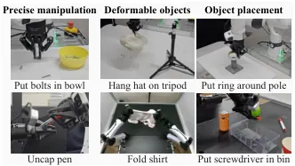
무슨 문제인가
World Action Model(WAM)은 사전학습된 video diffusion model이 아는 장면 변화 지식을 robot control에 쓰는 policy임. 기존 WAM은 미래 video를 action과 함께 생성하거나, 생성한 video에서 action을 뽑음. 이 방식은 배포 때마다 video denoising을 반복해서 느림. 또 생성한 미래 장면이 틀리면 action도 틀림. Fast-WAM처럼 학습 때만 video를 함께 학습하고 추론 때는 video를 만들지 않는 방법도 있으나, 이 feature에 예측 지식이 얼마나 남는지는 불분명했음.
어떻게 푸나
DreamFree는 학습을 두 단계로 나눔. 첫 단계에서는 사전학습된 video DiT(Wan2.2 5B 또는 14B)를 visual encoder로 씀. attention mask를 걸어 현재 프레임 token이 현재 관측과 instruction만 보게 함. 고정된 teacher video diffusion model은 현재와 미래 프레임이 모두 든 demonstration video에서 hidden feature를 뽑음. encoder의 현재 프레임 feature를 projector로 teacher feature 형태에 맞춤. 그다음 둘의 유사도를 높이는 future representation distillation loss를 씀. 원래의 video 생성 flow matching loss도 함께 써서 생성 능력을 유지함. 이 단계는 action label이 필요 없음. 둘째 단계에서는 Perceiver식 readout이 encoder feature에서 action용 token을 뽑음. 1B action DiT가 이 token과 instruction, proprioception을 받아 32 step action chunk를 flow matching으로 생성함. 배포 때는 teacher와 projector를 버리고 encoder를 한 번만 통과시킴.
결과
- RoboCasa-Kitchen(시뮬레이션 주방 조작 과제 24개, 과제당 demonstration 50개)의 평균 성공률이 14B backbone에서 71.7%임. distillation loss를 빼면 47.2%, 생성 loss를 빼면 55.6%로 내림.
- 같은 benchmark에서 추론 때 video를 만들지 않는 Fast-WAM은 44.4%이고, backbone을 14B로 키워도 44.7%임. DreamFree는 5B에서 14B로 키우면 58.5%에서 71.7%로 오름. action label 없는 추가 video를 encoder 학습에 쓰면 74.4%임.
- 실제 DROID 로봇에서 사전학습 분포 안의 과제 10개를 새 물체·배치로 과제당 5회 평가함. 평균 성공률은 64%로 DreamZero 56%, π0.5 16%보다 높음. 수건 덮기, 모자 걸기, 볼트 담기에서 DreamZero는 전부 실패함.
- action label 없이 composite 과제 video만 encoder 학습에 넣으면, 시뮬레이션 composite 과제 3개의 평균 성공률이 0%에서 21.7%로 오름. distillation 없이 같은 video를 넣으면 0%임. 평가 로봇과 다른 dual-arm Franka의 video만 encoder 학습에 더 넣으면, ALOHA-AgileX(양팔 조작 로봇) 과제 평균 성공률이 6.7%에서 30%로 오름.
한계
실로봇 정량 평가는 DROID 과제 10개, 과제당 5회뿐이고 모두 사전학습 분포 안의 과제 종류임. 저자는 DreamZero가 수건 덮기 등에서 실패한 사례 대부분에서 부정확한 미래 video 예측을 관찰했다고 씀. 이것이 실패 원인인지 다른 차이를 통제해 확인한 실험은 없음. video만으로 배우는 과제 전이는 base policy가 필요한 동작을 이미 할 수 있을 때만 됨: cabinet을 못 여는 policy는 cabinet에 넣는 과제를 video로 배우지 못함.
누리랩 연구와의 연결
- 미래 장면을 생성하지 않고 world model의 예측 지식만 feature로 쓰는 설계임. world model 기반 VLA를 실시간 control에 쓸 때, 그리고 test-time에 미래 imagination이 꼭 필요한지 따질 때 직접 비교 대상임.
- action label 없는 video, 다른 embodiment video로 새 과제를 배우는 실험은 demonstration 수집 비용을 줄이는 manipulation 연구의 baseline으로 쓸 수 있음.
2
82점
AIRoA-0: Long-Horizon, Precise, Cross-Embodiment Manipulation from Handheld Data
VLA
relevance 10/10
Robotics (cs.RO)
로봇 없이 사람이 손에 든 gripper로 녹화한 16,151시간 데모만으로 양팔 VLA를 학습하고, 데이터에 없던 장소에서 긴 조작 과제를 한 문장 지시로 수행함. Franka 과제 10개 평균 성공률이 78%로, 같은 데모로 post-training한 π0.5의 27%보다 높음.
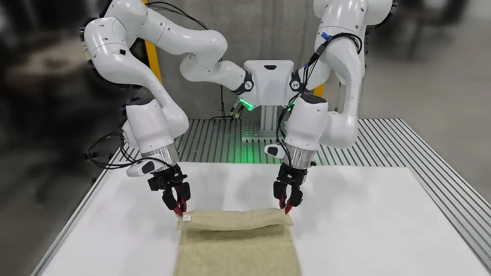
무슨 문제인가
로봇 teleoperation으로 데모를 모으면 데이터 양이 로봇 대수와 로봇 사용 시간에 묶임. UMI(Universal Manipulation Interface)처럼 손에 드는 gripper로 녹화하면 사람 수만큼 데이터가 늘지만, 데이터에는 로봇이 실패하거나 회복하는 장면이 없음. 정책은 손목 카메라 두 대만 보므로 작업 공간 전체를 못 봄. 손목 카메라 화면이 과제의 서로 다른 단계에서 거의 같게 보일 수 있어, 화면만으로는 지금 몇 번째 단계인지 알기 어려움. 녹화 장소와 배치 장소가 늘 달라서, 긴 양팔 과제를 처음 보는 장소에서 해내는 것이 이 방식의 실제 조건임.
어떻게 푸나
AIRoA-0(A-0)은 π0.5 구조(SigLIP 이미지 encoder, Gemma 2B, flow matching action expert)를 공개 가중치에서 시작함. 데이터는 손목 카메라가 달린 자체 gripper YUBI로만 녹화하고, 같은 gripper를 로봇 끝단에 달아 씀. 입력은 양 손목 영상 두 장, 지시문, gripper 상태이고 출력은 action chunk임. 각 action은 관측 시점 gripper 자세를 기준으로 한 목표 자세라서 로봇 base나 관절에 기대지 않음. pre-training에서는 visual evidence budget(지시문에 맞춰 이미지 token마다 남길 비율을 학습하는 gate)과 subtask 문장 예측 보조 loss를 더함. post-training에서는 지금 과제가 어느 stage(연속된 subtask 묶음)인지 분류하는 head를 붙이고, 예측한 stage를 문장으로 action expert에 넣음. 추론 때는 예측한 stage 확률을 EMA(지수 이동 평균)로 평활해, 한 번의 오분류로 stage가 바뀌지 않게 함. 최근 gripper 상태 10개를 token 4개로 줄인 proprioceptive memory도 더함. 추론 때는 noise 수준이 다른 chunk 2개를 buffer에 두고 새 관측마다 함께 denoise하는 streaming decoding을 씀. 새로 들어온 chunk는 noise 수준 1에서 0.1까지 크게 denoise되고, 실행 직전 chunk는 0.1에서 0까지 작은 보정만 받음(non-uniform schedule).
결과
- 학습 데이터를 녹화하지 않은 장소의 양팔 Franka에서 과제 10개(수건 접기, 부품 분류, 로봇청소기 패드 교체 등)를 과제당 15회 평가함. 부분 점수를 준 평균 성공률이 A-0은 78%, π0.5는 27%, XR-1은 23%, GR00T N1.7은 16%, MolmoAct2는 14%임.
- 비교 모델 4개는 action horizon, 주기, update 수를 바꿔 과제마다 최고 결과를 보고했고, A-0은 모든 과제에 recipe 하나만 씀. 과제 10개 모두에서 A-0이 가장 높음. A-0 성공률이 가장 낮은 과제는 이어폰(Earbuds) 과제로, A-0 30%, 비교 모델 최고 18%임.
- pre-training 데이터를 6.25%에서 100%로 늘린 5개 모델을 같은 16개 과제 묶음에 post-training함. held-out action loss가 데이터 양에 대해 power law를 따름(R² 0.98). 데이터가 두 배가 될 때마다 loss가 약 2.4% 내림.
- 같은 가중치를 재학습 없이 TX-G2, OpenArm, UR 팔에서 돌려 과제 2~4개를 시연함. 이 로봇들의 성공률 수치는 본문에서 확인 불가함.
한계
visual budget, stage head, memory, non-uniform decoding 각각의 기여를 떼어 본 성공률 ablation이 없어 78%가 어느 구성 요소에서 왔는지 알 수 없음. 장면 변화 대응과 다른 로봇 실행은 정량 평가 없이 시연 사례로만 보임. 새 과제마다 그 과제의 손 데모 3~26시간과 post-training이 필요하고, 같은 YUBI gripper와 손목 카메라를 단 로봇에만 적용됨.
누리랩 연구와의 연결
- stage를 분류해 문장으로 action expert에 넣고 EMA로 평활하는 구조는 long-horizon manipulation에서 진행 상태를 추적하는 robot memory 설계의 비교 대상이 됨.
- 공개될 16,151시간 손 데모와 pre-trained 가중치는 VLA pre-training 실험의 출발점으로 쓸 수 있음. 실패 장면이 없는 데이터라 failure detection/recovery 연구에는 별도 데이터가 필요함.
3
79점
FloMo: 3D Scene Flow as a World Action Model Intermediate for Learning from Human Video
World Model
relevance 10/10
ICRA·IROS·RA-L 계열 양식 (추정)
Computer Vision and Pattern Recognition (cs.CV)
World action model이 미래 영상 대신 3D scene flow(장면 점들의 3D 이동량)와 action을 함께 예측하게 바꿔서, 사람 영상에서 배운 움직임을 로봇으로 더 잘 옮김. 처음 보는 실로봇 과제 3종의 평균 성공률이 영상을 예측하는 같은 구조의 7%에서 60%로 오름.
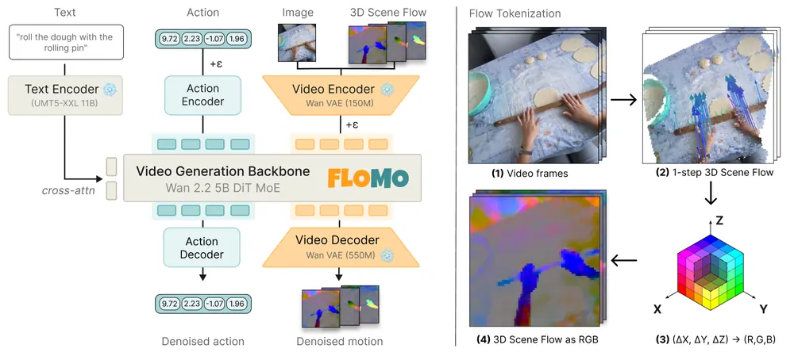
무슨 문제인가
Action label이 붙은 로봇 demonstration은 모으기 비싸고, action이 없는 사람 영상은 많음. 그래서 영상 생성 모델을 backbone으로 쓰고 미래 영상과 action을 함께 예측하는 world action model(WAM)이 쓰임. 그런데 미래 영상에는 질감, 조명, 배경처럼 action을 정하는 데 필요 없는 정보가 많음. 모델 용량이 이런 외관 예측에 쓰이고, 외관이 바뀌는 새 물체나 새 과제에서 일반화가 약해질 수 있음.
어떻게 푸나
FloMo는 이미지 한 장과 언어 지시를 입력으로 받아, 앞으로 16 step 동안의 3D scene flow와 action chunk를 출력함. Scene flow는 SpatialTrackerV2(기성 3D point tracker)로 첫 frame의 64×64 격자 점 4096개를 따라가서 미리 뽑아 둠. 점 좌표는 첫 frame의 카메라 좌표계로 옮기고, 첫 frame 대비 누적 3D 변위를 target으로 씀. 이 변위 (ΔX, ΔY, ΔZ)를 RGB 값으로 바꿔 영상처럼 만든 뒤, 고정된 Wan 2.2 VAE로 encoding함. 그래서 새 tokenizer 없이 영상 latent와 같은 형식의 motion token을 얻음. Wan 2.2 5B DiT에 LoRA(학습 파라미터 약 161M)를 붙여 motion token과 action token을 flow matching으로 함께 denoise함. 학습은 두 단계임. Mid-training에서는 사람 영상(EgoVerse 약 81시간 등)은 scene flow loss만, 로봇 데이터는 scene flow와 action loss를 받음. Fine-tuning에서는 사람 영상을 빼고 로봇 데이터만 씀.
결과
- 같은 구조와 학습 절차에서 예측 target만 바꿈: motion+action(FloMo), video+action(VA), video+motion+action(VMA). 양팔 YAM 로봇 플랫폼의 학습 분포 안 과제 3개(과제당 15회) 평균 성공률이 FloMo 91%, VMA 51%, VA 40%임. 좁은 틈으로 뚜껑을 여는 Toolbox에서는 FloMo 87%, VMA와 VA 모두 13%임.
- 로봇 데이터에 없던 동작·과제·물체 3종(Close Cabinet, Pull String, Highlighter, 과제당 10회)에서 FloMo는 30회 중 18회 성공(60%)함. 2D point track을 중간 표현으로 쓰는 AMPLIFY와 영상을 함께 예측하는 DreamZero는 각각 20%임. 영상을 예측하는 같은 구조의 VA와 VMA는 각각 30회 중 2회(7%)임. Pull String에서 FloMo는 7/10, 다른 방법은 모두 1/10 이하임.
- 사람 영상을 빼고 학습하면 같은 3종 평균 성공률이 60%에서 7%로 내림. 이 대조군은 과제당 5회(총 15회)만 평가함.
- RoboTwin(시뮬레이션 양팔 조작 benchmark) 5개 과제를 과제당 demonstration 50개로 학습하고 100회씩 평가함. 평균 성공률이 FloMo 63.6%, π0.5 44.8%, FAST-WAM(영상 기반 WAM) 41.0%, Diffusion Policy 19.2%임.
한계
실로봇 평가는 YAM 한 종류에서 과제 6개뿐이고 과제당 10~15회라 차이의 통계적 신뢰도가 낮음. 영상 target이 성능을 낮추는 이유가 외관에 대한 민감성이라는 설명은 가설이고 따로 분리해 검증하지 않음. Scene flow 추출은 30fps 영상 1시간당 약 72 GPU-hour가 들고, 예측한 motion과 action이 서로 맞도록 묶는 제약이 없어 둘이 어긋날 수 있음. 코드 공개 여부는 본문에서 확인 불가함.
누리랩 연구와의 연결
- World model의 예측 target을 영상이 아닌 3D 변위장으로 바꾼 설계라서, 누리랩의 VLA·world model 연구에서 예측 target을 정할 때 바로 비교 대상이 됨. 같은 구조에서 target만 바꾼 ablation 방식도 그대로 가져다 쓸 수 있음.
- 예측한 scene flow와 실제 실행 결과의 차이를 failure detection 신호로 쓰는 방향, 그리고 motion과 action의 불일치를 test-time에 줄이는 방향으로 이어질 수 있음.
4
78점
PrimeSim: A Generalist World Model Simulator from Large-Scale Cross-Embodiment Demonstrations
World Model
relevance 9/10
Robotics (cs.RO)
video generator를 22개 로봇 플랫폼의 demonstration 30,110시간으로 추가 학습해, action을 넣으면 카메라 3개 시점의 미래 영상을 이어 만드는 autoregressive world model simulator PrimeSim을 만듦. 4-step 샘플링으로 A100 한 장에서 초당 10.1 frame을 만들고 최대 105초 rollout을 유지함.
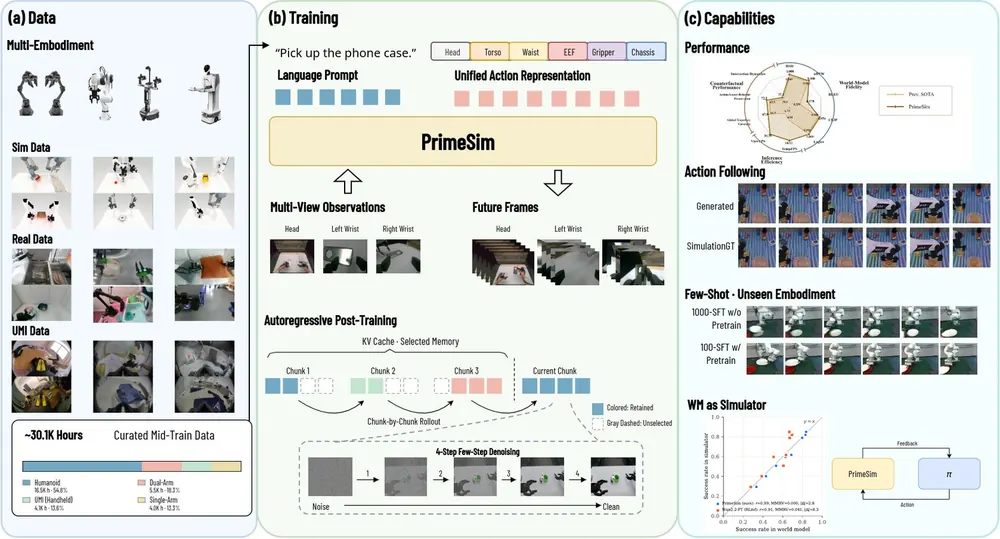
무슨 문제인가
world model을 policy 평가와 학습용 simulator로 쓰려면 그럴듯한 영상을 만드는 것으로는 부족함. 명령한 action대로 로봇이 움직여야 하고, 여러 카메라 시점이 같은 장면을 보여야 하고, 학습 window보다 긴 rollout에서도 장면이 유지돼야 함. 기존 video generator는 고정 길이의 실제 영상을 context로 학습하므로, 자기가 만든 영상을 다시 조건으로 쓰면 오류가 쌓임. 또 chunk마다 50 step씩 denoising하면 반복 rollout에 쓰기에 느림.
어떻게 푸나
PrimeSim은 Wan2.2-TI2V-5B(5B 파라미터 video generator)에서 시작해 midtraining과 posttraining 두 단계로 학습함. midtraining에서는 모든 로봇의 action을 양손 end-effector pose, 머리·허리·몸통 관절각, gripper 개폐, 바퀴 속도로 된 31차원 벡터로 바꾸고 없는 칸은 0으로 둠. action은 window 첫 frame 기준의 상대값으로 표현함. 각 action token은 attention mask로 자기 frame에만 연결되고, 별도 adapter가 같은 action을 frame feature에 직접 더함. 30개 transformer block 중 3개마다 1개만 세 시점 전체를 보고 나머지는 시점 안에서만 attention하며, 시점마다 camera token을 붙임. posttraining은 4단계임. 먼저 chunk 단위 causal 생성으로 바꾸고, 50-step 샘플링을 4-step으로 distillation함. 이어서 자기가 만든 history로 rollout하며 bidirectional 모델을 teacher로 DMD(distribution matching distillation) 학습함. 끝으로 rollout 길이를 episode 전체로 늘림. 마지막 단계의 KV cache는 첫 관측 3칸, 드문드문 뽑은 장기 history 9칸, 최근 9칸으로 된 총 21칸 memory임. 입력은 첫 관측의 3시점 영상, action 궤적, 언어 지시이고 출력은 3시점 미래 영상임.
결과
- WorldSimProbe(명령한 action대로 로봇이 움직이고 장면이 실제 움직임에 반응하는지 보는 진단 suite 5개)에서 공개 action-conditioned world model 5개와 비교함. 5개 suite 중 4개에서 1위임. 가장 강한 경쟁 모델보다 global trajectory coverage는 10.0%, 행동 출처별 차이 보존은 41.8%, interaction dynamics는 48.4% 높음. 원문은 이 값이 상대 비율인지 점수 차인지 밝히지 않음. 작고 큰 action 섭동에 대한 반응을 보는 local action calibration에서는 다른 모델보다 낮음.
- EWMBench(embodied world model 생성 영상 평가 benchmark) overall 점수가 6.09로 GE-Sim 두 변형의 5.82, 5.79보다 높음. 8개 항목 중 5개에서 1위임.
- LIBERO(시뮬레이션 조작 과제 모음)에서 PrimeSim 안에서 잰 policy 성공률이 물리 시뮬레이터 성공률과 r=0.99로 맞음. 저자는 PrimeSim 안에서 GRPO(group relative policy optimization, 같은 상태에서 뽑은 rollout 묶음 안의 상대 reward로 갱신하는 RL)로 policy를 개선했다고 주장함. 비교한 policy 수와 학습 전후 성공률은 제공된 본문 텍스트에서 확인 불가함.
- 학습에 없던 플랫폼에 그 플랫폼 데이터로 100~200 gradient step만 적응시켜 생성이 가능해짐. 같은 조건에서 midtraining 없는 pretrained backbone은 적응하지 못함.
한계
policy 평가와 개선 근거는 LIBERO 물리 시뮬레이터와의 비교이고, 실로봇 policy를 PrimeSim으로 개선한 결과는 제공된 본문에서 확인되지 않음. 새 플랫폼은 100~200 step의 추가 학습이 필요해 zero-shot 적응은 아님. dexterous hand와 다리 보행 데이터는 학습에서 제외해 이런 embodiment는 다루지 않으며, 세밀한 action 반응(local calibration)은 다른 모델보다 낮음.
누리랩 연구와의 연결
- 가중치와 학습·추론 코드를 공개한다고 밝혔지만 코드 저장소 주소는 본문에 없음. 공개되면 world model 기반 policy 평가나 test-time planning에서 imagined rollout으로 후보 action을 비교하는 실험의 baseline simulator로 쓸 수 있음.
- 첫 관측, 장기 history, 최근 history로 나눈 KV cache memory는 robot memory 연구와 이어짐. 같은 21칸 예산에서 memory 구성을 바꾸는 비교 실험을 우리 과제에 옮겨 볼 수 있음.
5
76점
Say the Same, Act Differently: Diagnosing and Steering Text-Action Divergence in Reasoning VLAs
VLA
relevance 9/10
NeurIPS 2026 채택
Machine Learning (cs.LG)
reasoning VLA의 rationale은 한 글자도 바꾸지 않고 행동만 바꾸는 이미지 교란이 가능함을 보이고, 그 원인을 hidden state의 기하로 설명함. 주행 VLA Alpamayo의 장애물 주석 장면 154개 중 52.6%에서 rationale이 그대로인 채 새 충돌 경로가 만들어지고, text 보존 항만 넣은 일반 gradient 공격도 48.7%로 비슷함.
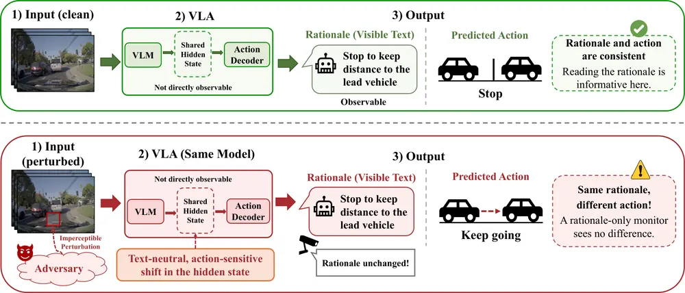
무슨 문제인가
reasoning VLA는 행동과 함께 자연어 rationale을 내므로, 감독자가 이 글을 읽고 위험한 행동을 미리 잡아낼 수 있다는 기대가 있음. 기존 VLA reasoning 공격(TRAP 등)은 rationale 자체를 바꾸므로 글을 읽는 monitor에 흔적이 남음. rationale monitor로 안전을 보증하려면 행동이 위험하게 바뀔 때 글도 반드시 바뀌어야 함. 이 반대 방향, 즉 글은 그대로 두고 행동만 바꿀 수 있는지는 확인된 적이 없었음.
어떻게 푸나
저자들은 글과 행동이 같은 hidden state를 읽는다는 점에 주목함. 글은 이산적인 readout이라 서로 다른 hidden state가 같은 문장을 낼 수 있음. TNAS(text-neutral action-subspace) 진단은 먼저 action 출력의 Jacobian으로 행동이 가장 민감한 hidden state 방향을 구함. 다음으로 clean rationale의 NLL과 logit margin 감소를 두 text loss로 정하고, 두 loss의 gradient가 이루는 2차원 공간을 구함. 행동 방향에서 이 공간 성분을 빼고 정규화한 것이 TNAS 방향이며, 1차 근사에서 두 text loss를 바꾸지 않음. 공격은 이미지에 대한 white-box PGD(projected gradient descent: 교란 크기를 제한한 gradient 공격)임. 그 목적함수에 행동 변화, text 보존 penalty, hidden state 변화와 TNAS 방향의 cosine 정렬 항을 함께 넣음. 실험 모델은 주행용 Alpamayo-1.5와 조작용 InstructVLA임.
결과
- hidden state에 같은 크기의 교란을 넣었을 때 Alpamayo(64개 waypoint, 6.4초 경로)의 평균 경로 변위는 TNAS 방향 0.142m, 두 text gradient 방향 0.00297m와 0.00323m임. 반대로 teacher-forced KL(clean과 교란 시 다음 token 분포의 차이)은 text gradient 방향이 269배에서 277배 큼.
- Alpamayo 전체 이미지 공격에서 rationale이 글자 그대로 유지된 비율은 TNAS 유도 시 89.5%, text 보존 PGD 83.0%임. teacher-forced KL은 text 보존 PGD의 0.326에서 TNAS 유도의 0.103으로 68.4% 내림. silent collision(새 충돌이 생기고 rationale은 동일) 비율은 52.6% 대 48.7%로 비슷한 수준임.
- 행동 변화만 노리는 PGD는 rationale을 9.5%만 유지해 silent collision이 4.55%에 그침. 전방 카메라 두 대에만, visual token의 13.1%를 덮는 patch로 공격을 제한해도 silent collision이 31.8%에서 35.1% 사이로 나옴.
- 조작 모델 InstructVLA(Bridge 분포 예시 200개)에서 응답 문장 유지율은 TNAS 유도 85.0%, text 보존 PGD 77.5%임. 이때 16단계 7-DoF action chunk의 정규화 변위는 1.73으로 text 보존 PGD의 1.97보다 약간 작음.
한계
모든 공격은 전처리된 이미지 tensor에 넣는 digital white-box 교란이며 실제 물리 patch는 배치하지 않음. 충돌은 기록된 주변 차량과 경로를 겹쳐 보는 open-loop 판정이고, 조작 쪽은 action 변위만 쟀으며 실로봇 실행이나 과제 실패는 보이지 않음. 방어 방법은 시험하지 않았고, 공격 코드와 교란 tensor는 공개하지 않는다고 밝힘.
누리랩 연구와의 연결
- VLA의 rationale을 failure detection 신호로 쓰려는 연구에 직접적인 반례임. 글 기반 monitor와 별도로 action channel을 검사하는 detector를 설계할 근거가 됨.
- TNAS처럼 text gradient를 빼낸 hidden state 방향은 reasoning과 action의 정합성을 재는 진단 도구로 쓸 수 있음. reasoning VLA의 faithfulness 평가나 counterfactual 분석에 바로 적용해 볼 수 있음.
6
74점
Should the Action Expert Train the VLM? Action-Token Supervision and Gradient Routing in Mixture-of-Transformer VLAs
VLA
relevance 10/10
ICLR 양식 (추정)
Robotics (cs.RO)
VLM과 flow-matching action expert를 묶은 VLA에서 expert의 loss gradient를 VLM까지 흘릴지(coupling) 막을지(insulation)를, 이산 action token 감독 유무와 교차해 통제 비교함. action token 없이 함께 학습하면 coupling이 closed-loop 주행 route progress를 0.425에서 0.601로 올림.
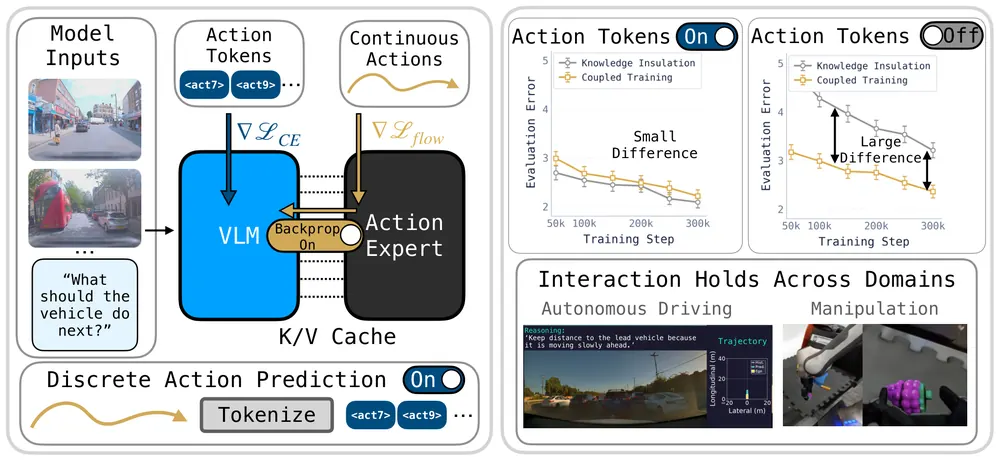
무슨 문제인가
π0.5, MolmoAct2, Alpamayo-R1 같은 VLA는 action expert의 gradient가 VLM으로 들어가지 않게 막는 Knowledge Insulation을 씀. 근거는 새로 붙인 expert의 gradient가 VLM의 사전학습 능력을 해친다는 것임. 그런데 이 recipe들은 VLM에 FAST 같은 이산 action token 예측도 같이 감독함. 그래서 insulation이 잘 되는 이유가 gradient 차단 자체인지, action token이 VLM에 행동 정보를 대신 가르쳐서인지 가려지지 않았음.
어떻게 푸나
VLM이 이미지·언어·과거 궤적을 읽고, expert는 VLM 층별 K/V(key-value) 표현을 조건으로 연속 action을 생성하는 구조를 고정함. 주행 모델은 Qwen3-VL-2B와 같은 폭의 flow-matching expert이고, 출력은 가속도와 곡률 열을 적분한 궤적임. 두 스위치를 독립으로 바꿈: VLM이 같은 미래 궤적의 이산 action token을 cross-entropy로 예측하는지, flow loss gradient가 K/V 경로로 VLM에 가는지임. insulation은 stop-gradient로 구현해 forward 계산은 같고 backward만 다름. 평가 때 action token은 decode하지 않고 expert의 연속 출력만 씀. 2x2 조건을 동시 학습, VLM 먼저 100k step, expert 먼저 100k step의 세 schedule에서 총 300k step으로 맞춤. 조작에서는 π0.5 재구현과 MolmoAct2로 동시 학습만 반복함.
결과
- 주행 open-loop 평가(Physical AI AV 데이터셋 Public Golden 1,434개, OOD 273개)의 첫 샘플 ADE(예측 궤적과 실제 궤적의 평균 위치 오차)를 잼. 동시 학습에서 action token이 없으면 Public Golden ADE가 insulation 3.21m에서 coupling 2.36m로 내림. action token이 있으면 insulation 2.09m, coupling 2.21m로 insulation의 오차가 조금 더 작음.
- AlpaSim(closed-loop 주행 시뮬레이터) 827개 장면, 장면당 rollout 5회의 평균 route progress를 잼. 동시 학습에서 coupling이 token 없이 0.425에서 0.601로, token 있을 때 0.600에서 0.703으로 오름. VLM 먼저 학습한 경우 token이 있으면 0.648 대 0.646으로 차이가 없음.
- PolaRiS(시뮬레이션 조작 평가) 과제 3개에서 조건·과제당 50회 rollout의 정규화 progress(채점 항목 달성 비율, 완수율 아님)를 잼. insulation에서 coupling으로 바꾸면 π0.5 재구현은 FAST가 없을 때 10.3%에서 32.9%로, 있을 때 19.5%에서 30.7%로 오름. MolmoAct2는 각각 14.5%에서 36.5%, 22.0%에서 24.3%임.
- 안전 지표는 coupling 쪽이 항상 낫지 않음. expert 먼저 학습하고 token이 있을 때 at-fault 충돌률이 insulation 0.061, coupling 0.097임.
한계
조건마다 학습을 한 번만 돌려 seed 변동은 재지 않았고, 신뢰구간은 평가 clip에 대한 bootstrap뿐임. closed-loop 평가는 주행·조작 모두 시뮬레이션이고 실로봇 실험은 없음. insulation이 VLM의 일반 능력을 지키는지는 주행 rationale 판정(Lingo-Judge)으로만 봤고, 차이가 나는 기전은 밝히지 않음.
누리랩 연구와의 연결
- MoT(Mixture-of-Transformers, VLM과 action expert가 층별 attention 표현을 공유하는 구조) VLA를 학습할 때 stop-gradient와 FAST 감독을 따로 끄고 켜는 ablation 설계를 그대로 가져다 쓸 수 있음. open-loop 오차와 closed-loop 성능의 결론이 갈린다는 결과는 VLA 평가 지표를 고를 때 근거가 됨.
- 동시 학습 + coupling이 VLM 먼저 학습하는 기존 recipe보다 나은 경우가 있다는 결과는, 우리 VLA fine-tuning 기본 설정을 다시 점검할 이유가 됨.
7
72점
RAFT: Reasoning-Aligned Fine-Tuning Improves Robustness of VLA Post-Training
VLA
relevance 10/10
CoRL 양식 (추정)
Robotics (cs.RO)
VLA를 적은 demonstration으로 fine-tuning하기 전에, 과제 관련 물체와 움직임을 말로 예측하는 LoRA adapter를 먼저 학습하고 고정하는 2단계 post-training을 제안함. 실제 DROID 로봇의 분포 밖 조건 성공률이 plain fine-tuning의 27.9%에서 75.0%로 오름.
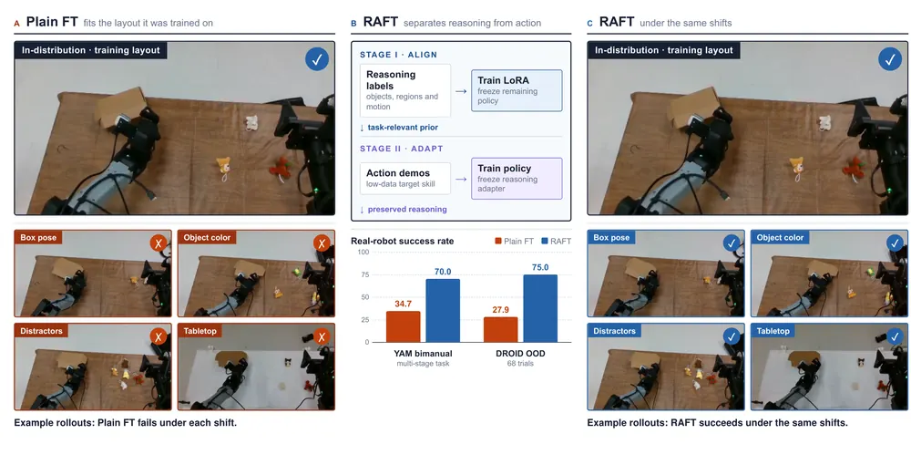
무슨 문제인가
generalist VLA를 실제 과제에 쓰려면 보통 그 과제의 demonstration으로 post-training을 함. demonstration은 모으기 비싸서 좁은 환경 몇 곳에서 적게 모으는 경우가 많음. 이렇게 fine-tuning하면 학습 환경에서는 성공률이 오르지만, 조명·배경·물체·지시문이 바뀌면 성공률이 내려감. 기존 대응은 RETAIN처럼 pretrained 가중치와 fine-tuned 가중치를 섞거나, DeLock처럼 vision encoder 가중치 변화를 regularization으로 묶는 방식이었음.
어떻게 푸나
RAFT(Reasoning-Aligned Fine-Tuning)는 action 학습 전에 reasoning 학습 단계를 따로 둠. Stage I에서는 VLM annotator(Gemini 3.1 Pro)가 demonstration 관측과 지시문을 보고 reasoning 정답을 만듦. 정답은 물체 bounding box, keypoint, gripper 궤적(trace), 공간 관계 설명, VQA 답 같은 text token 열임. policy는 관측과 reasoning prompt를 입력받아 이 token 열을 cross-entropy로 예측하고, 이때 language model과 vision encoder에 붙인 LoRA만 갱신됨. Stage II에서는 이 LoRA를 고정하고 language model, action expert, projection layer를 action demonstration으로 학습함. 출력은 policy의 원래 action chunk이며 SigLIP vision 가중치는 두 단계 내내 고정됨. 그래서 action gradient가 reasoning adapter를 직접 바꾸지 못함.
결과
- 실제 DROID 로봇에서 단팔 pick-and-place를 평가함. MolmoBot(대규모 시뮬레이션 데이터로 학습한 조작 policy)을 demonstration 50개로 post-training함. 분포 밖 조건 68회 성공률이 RAFT 75.0%, plain fine-tuning 27.9%임. 조건별로는 새 물체 색 83% 대 33%, distractor 추가 75% 대 25%, 탁자면 변경 65% 대 25%이고, 학습 환경에서는 63% 대 60%로 비슷함.
- 실제 양팔 YAM 로봇에서 상자를 열고 물체를 넣는 2단계 과제(π0.5, demonstration 100개)의 전체 완료율이 RAFT 70.0%, 가장 강한 baseline인 DeLock 36%, plain fine-tuning 34.7%, RETAIN 29%임. 학습 환경과 4가지 변화 조건을 합친 값이고 조건당 30회임.
- MolmoSpaces 시뮬레이션 pick-and-place(5개 평가 split, split당 106회)의 평균 성공률이 RAFT 83.21%, plain fine-tuning 79.62%임. reasoning과 action을 1:1로 섞어 한 번에 학습하면 63.21%, Stage II에서 adapter를 계속 학습하면 73.96%로 plain fine-tuning보다 낮음.
- vision encoder만 고정한 plain fine-tuning도 79.62%에 머물러, vision 가중치 고정만으로는 차이가 설명되지 않음. 다만 시뮬레이션 평균 차이는 3.6퍼센트포인트로 작음.
한계
어떤 reasoning 형식이 좋은지는 과제마다 달라서, 본 결과도 pick-and-place는 full reasoning, open-drawer는 bounding box처럼 과제별로 고른 형식을 썼음. 실로봇은 과제 하나씩이고 DROID 조건당 20~30회, YAM 조건당 30회로 표본이 작음. attention과 linear probe 분석은 표현이 다르다는 것을 보일 뿐, 그 차이가 성공률 차이의 원인임을 보이지는 않음.
누리랩 연구와의 연결
- VLA post-training에서 robustness를 지키는 방법을 가중치 병합이나 regularization이 아니라 학습 순서와 parameter 고정으로 다룬 사례임. 적은 demonstration으로 manipulation VLA를 적응시킬 때 바로 비교 baseline으로 쓸 수 있음.
- Stage I 정답이 bounding box·keypoint·trace 같은 object-centric 표현이라, 어떤 grounding 표현을 adapter에 넣을지 비교하는 embodied spatial reasoning 연구와 이어짐.
8
72점
Human-to-Robot Transfer via Bridging Representation and Action Space in VLAs
VLA
relevance 9/10
CoRL 2026 채택
Artificial Intelligence (cs.AI)
로봇 데이터로 사전학습한 VLA에 사람 손 시연만으로 새 물체와 새 동작을 가르치기 위해, 관측 쪽은 손 기하로 맞추고 행동 쪽은 공유 latent와 분리된 decoder로 맞춤. 사람 시연으로만 보여 준 에어프라이어 Open/Close 과제의 진행 점수가 기존 co-training의 0.0에서 62.7로 오름.
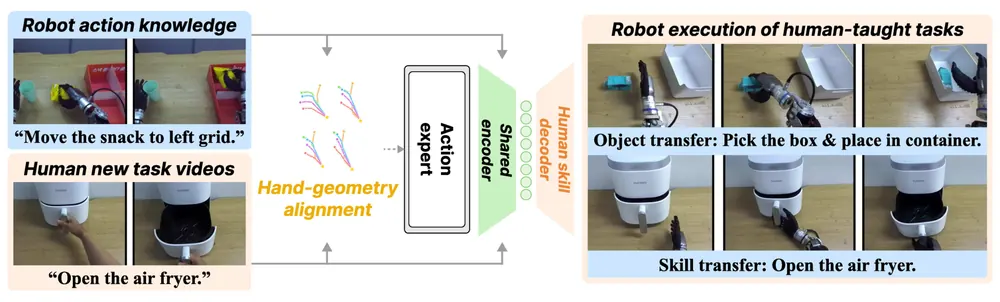
무슨 문제인가
VLA를 새 로봇과 환경에 맞추려면 그 로봇으로 teleoperation 시연을 모아야 해서 비용이 큼. 사람 손 시연은 카메라만으로 쉽게 모이지만, 사람과 로봇은 보이는 모습과 움직이는 방식이 모두 다름. 기존 방법은 frame 변화로 추정한 latent action이나 복원한 손목·손 동작으로 행동 공간만 맞춤. 이 경우 관측의 차이는 그대로 남고, 사람과 로봇의 움직임 속도나 궤적 모양 차이도 하나의 action mapping에 억지로 묶임.
어떻게 푸나
H2RB(Human-To-Robot Bridge)는 짝이 맞지 않는 사람 시연과 로봇 시연을 함께 써서 사전학습 VLA(RLDX-1-IMG)를 fine-tuning함. 먼저 사람 영상에서 HaWoR(1인칭 영상에서 손 동작을 world 좌표로 복원하는 기존 방법) 기반 파이프라인으로 손목 움직임과 손가락 관절을 복원함. 이를 로봇 손에 retarget해 로봇과 같은 손목 위치·회전·손 관절 형식으로 바꿈. 다음으로 16 step action chunk를 받는 공유 encoder 하나와 사람용·로봇용 decoder 두 개로 된 VAE tokenizer를 학습함. 이때 chunk 안 같은 상대 위치의 사람 latent 평균과 로봇 latent 평균을 가깝게 당기는 regularization을 더함. 관측 쪽에서는 VLM 출력 token에 residual adapter를 붙이고, 현재 손목 자세와 손목 기준 손가락 끝 5개 위치를 맞히도록 학습함(hand geometry-anchored alignment). 각 관측이 자기 손 기하를 정답으로 가지므로 사람과 로봇 데이터의 짝이 필요 없음. policy는 고정된 tokenizer의 latent를 flow matching으로 예측함. 두 decoder는 모두 로봇이 쓸 수 있는 같은 손목·손 표현을 출력함. 배포 때는 decoder 선택 실험에서 물체 전이 점수가 더 높았던 사람용 decoder를 쓰고, 그 출력을 IK로 팔 관절 명령으로 바꿈.
결과
- 평가는 OpenArm 팔과 Inspire 손에서 하고, 점수는 rollout마다 도달한 단계(접근 0.3, 잡기 0.6, 들기·절반 열기 0.8, 완료 1.0)를 평균해 0~100으로 매긴 값임. 성공률이 아님.
- 사람 시연으로만 보여 준 에어프라이어 Open/Close 과제(과제당 15회) 평균 점수가 H2RB 62.7임. 사람·로봇 행동을 같은 손목·손 행동 공간으로 묶는 Ego-Pi 방식 baseline과 일반 co-training은 같은 데이터와 학습량에서 둘 다 0.0임. 완전 성공 비율은 H2RB 30.0%임.
- 사람 시연으로만 보여 준 물체 3개(Box, Ball, Towel)의 pick-and-place 점수는 일반 co-training 8.0, Ego-Pi 방식 27.2, H2RB 51.8임. 학습 때 없던 배치 위치에서도 Ego-Pi 방식 21.3 대비 45.3임.
- 구성 요소를 하나씩 더한 ablation에서 Ego-Pi 방식 행동 공간에 관측 정렬만 넣고 tokenizer가 없으면 물체·동작 전이 점수가 34.7과 0.0임. tokenizer를 넣으면 43.3과 49.7, latent regularization까지 넣으면 51.8과 62.7로 오름.
한계
조건마다 policy를 한 번만 학습했고 분산이나 신뢰구간이 없으며, 동작 전이는 에어프라이어 하나의 30회 평가뿐임. 진행 점수 대신 완전 성공만 보면 물체 전이 12.2%, 동작 전이 30.0%로 아직 낮음. 저자는 사람 데이터가 수집 시간을 줄인다고 쓰지만, 수집 시간 절감은 측정하지 않았음.
누리랩 연구와의 연결
- 사전학습 VLA에 사람 시연으로 새 manipulation 동작을 넣는 구체적 방법이고, 관측 정렬과 행동 정렬을 따로 ablation한 결과가 있어 human video 기반 VLA 적응 연구의 비교 대상으로 쓸 수 있음.
- 공유 encoder와 embodiment별 decoder로 latent action을 나누는 구조는 dexterous hand를 쓰는 cross-embodiment policy를 설계할 때 그대로 시험해 볼 만함.
9
72점
Compression Forcing: Hierarchical History Tokenization Enables Flexible World Models
World Model
relevance 7/10
Computer Vision and Pattern Recognition (cs.CV)
world model이 과거 프레임을 압축할 때 움직임 정보를 앞쪽 token에, 정적인 배경을 뒤쪽 token에 두도록 학습하고, 앞쪽 token만 골라 증폭해 다음 프레임을 예측함. RT-1 서랍 열기 과제에서 끝까지 학습한 RT-1 policy의 실제 성공률은 81.5%이고, 이 방법은 64%, 기존 tokenizer ElasticTok은 48%로 예측함.
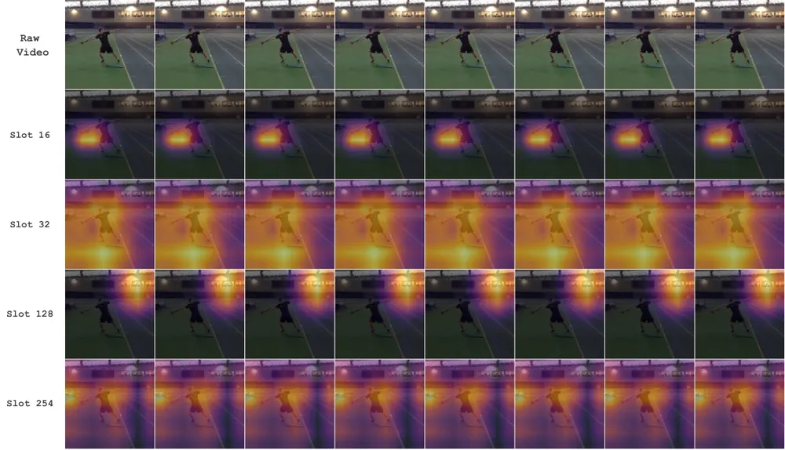
무슨 문제인가
최근 world model은 video generation 모델의 tokenizer와 history conditioning을 그대로 가져다 씀. 이 방식은 프레임마다 같은 양의 token을 쓰고 보기 좋은 화질을 목표로 학습되어, 예측에 필요한 움직임과 쓸모없는 배경을 구분하지 않음. Diffusion Forcing 계열은 과거 프레임에 noise를 섞어 일부만 보게 하는데, 이는 저주파 성분만 남기는 필터에 가까움. 저자들은 world model이라면 공간 주파수가 아니라 예측에 얼마나 중요한지에 따라 과거 정보를 골라야 한다고 주장함.
어떻게 푸나
CF(Compression Forcing)는 세 부분으로 이루어짐. 먼저 DAT(Dynamics-Aware Tokenization)가 과거 프레임 묶음을 순서가 정해진 token 열로 압축함. 각 slot token은 앞선 slot만 보도록 causal attention을 쓰므로, 앞부분 m개만 잘라도 그 자체로 쓸 수 있는 표현이 됨. DAT의 diffusion decoder는 두 가지 과제로 학습함: prefix만으로 전체 clip을 복원하는 static reconstruction과, 첫 프레임을 함께 받아 이후 프레임을 예측하는 dynamic prediction임. prefix가 짧을수록 dynamic prediction의 가중치를 크게 주어, 앞쪽 token은 변화를, 뒤쪽 token은 정적인 외형을 담게 함. 다음으로 diffusion transformer backbone이 다음 프레임을 예측하도록 학습되며, 조건으로는 겹치는 window마다 DAT token의 앞부분(길이는 임의)과 action을 받음. 마지막으로 HG-H(Hierarchical History Guidance)는 inference 때 서로 다른 prefix 길이로 얻은 score를 classifier-free guidance처럼 조합해 앞쪽 token의 영향을 원하는 만큼 키움.
결과
- Kinetics-600(행동 입력 없는 자연 영상 예측, 16프레임을 보고 8프레임 생성)에서 같은 backbone과 학습량으로 tokenizer만 바꿔 비교함. 비교 tokenizer는 프레임마다 고정된 양으로 압축하는 SD-VAE와, 앞쪽 token이 복원 화질을 우선 담도록 영상을 1D token 열로 압축하는 ElasticTok임. PSNR이 DAT+HG-H 18.83, guidance를 쓴 ElasticTok 18.60, SD-VAE 18.53으로 차이는 작음. FID는 88.13 대 90.74 대 90.57임.
- RT-1(실제 로봇 조작 데이터, 8프레임을 보고 16프레임 생성)에서 FVD가 DAT+HG-H 101.5, ElasticTok+HG-H 105.4, SD-VAE 120.4임. SSIM과 PSNR은 세 방법이 거의 같음(PSNR 20.43, 20.42, 20.47). 기존 world model인 DIAMOND는 FVD 382.4, Dreamer 4는 984.1임.
- CS:GO(1인칭 게임, 4프레임을 보고 12프레임 생성)에서 FVD가 DAT+HG-H 123.0, ElasticTok+HG-H 197.1, DIAMOND-HQ 368.5임. PSNR은 DIAMOND-HQ 18.3이 DAT의 17.24보다 높고, SSIM도 SD-VAE가 가장 높음.
- policy 평가 대용(Real2Sim, 서랍 열기 1개 과제, 정책당 50회 rollout, 성공 여부는 사람이 판정)에서 policy 4개를 평가함. 4개는 RT-1 학습 초기 checkpoint(Begin), 데이터 15%로 학습한 RT-1(15%), 끝까지 학습한 RT-1(Converged), RT-1-X임. 실제 성공률 0, 70.4, 81.5, 51.9%에 대해 CF는 2, 54, 64, 40%를 예측함. ElasticTok은 6, 40, 48, 36%이고, SD-VAE는 RT-1(15%)과 수렴 policy의 순위를 뒤집음.
한계
같은 backbone 비교에서 화질 지표 차이는 PSNR 0.2 dB 수준이고, 반복 실행에 따른 분산은 본문에서 확인 불가임. 정적 복원과 동적 예측 가중치 schedule이 각각 얼마나 기여하는지는 본문에서 확인 불가임. 실로봇 실험은 없고, policy 평가도 기록된 RT-1 데이터 기반의 과제 1개이며 CF도 실제 성공률을 일관되게 낮게 예측함.
누리랩 연구와의 연결
- 조작 world model에서 과거 관측을 예측 중요도 순으로 압축하는 방법으로, robot memory를 고정 길이 frame buffer 대신 길이를 바꿀 수 있는 token 열로 두는 설계에 참고가 됨.
- world model을 policy 평가 대용으로 쓰는 실험(Real2Sim)을 포함해, world model 기반 test-time planning이나 failure 예측 연구에서 tokenizer 선택이 평가 신뢰도에 주는 영향을 보는 비교 대상이 됨.
10
66점
CANDO: Conservative Action-Noise Directional Optimization for Residual Reinforcement Learning
RL
relevance 9/10
ICRA·IROS·RA-L 계열 양식 (추정)
Machine Learning (cs.LG)
고정된 flow matching policy를 online RL로 고칠 때, 입력 noise 수정을 latent 영역 제한 대신 conservative critic과 gate로 조절하고 행동 보정을 더함. 시뮬레이션 조작 과제 5개 평균 NAUC(학습 곡선 아래 면적)가 76.1로, 가장 강한 기존 방법 DICE의 68.5보다 7.6점 높음.
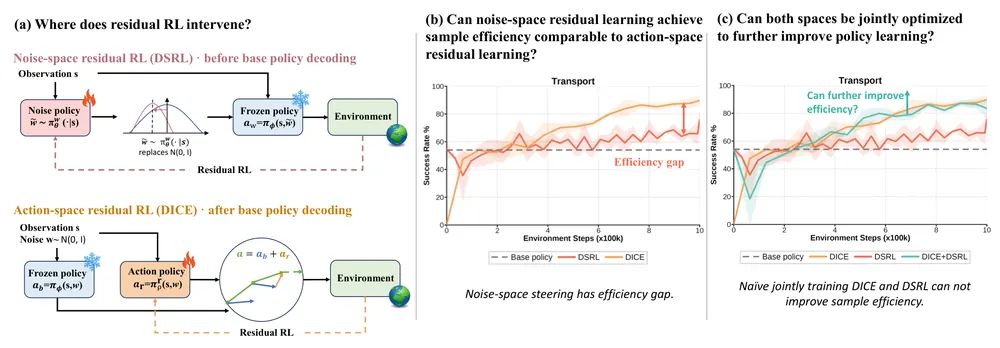
무슨 문제인가
diffusion이나 flow matching으로 demonstration을 배운 generative policy는 online RL로 더 고치기 어려움. 생성 과정 전체를 fine-tuning하면 계산이 많고 불안정하므로, policy를 고정하고 작은 residual만 배우는 방식이 쓰임. residual은 decoding 전 입력 noise를 바꾸는 noise-space 방식(DSRL 등)과 decoding 후 행동을 직접 고치는 action-space 방식(DICE 등)으로 나뉨. noise-space 방식은 tanh 경계나 Gaussian 구면 같은 고정된 latent 영역으로 noise 수정을 제한하는데, latent 거리는 decoding된 행동의 품질과 간접적으로만 이어짐. 그 결과 noise-space 방식은 대부분 과제에서 DICE보다 sample efficiency가 낮고, 두 방식을 단순히 합쳐도 DICE보다 나아지지 않음.
어떻게 푸나
CNDO(Conservative Noise Directional Optimization)는 상태와 Gaussian noise를 입력받아 noise에 더할 방향을 출력하는 network를 배움. 원래 noise와 수정된 noise를 각각 고정된 policy에 넣어 두 action chunk를 만들고, critic은 decoding된 action chunk 위에서 가치를 매김. latent 영역 제한을 없애는 대신 두 장치를 둠. 첫째, critic 10개 ensemble의 최솟값을 쓰고, 고정 policy 행동과 replay 행동 어느 쪽에서도 먼 후보 행동의 가치만 낮추는 conservative 항을 더함. 둘째, target critic의 가치 비교를 증류한 이진 gate가 chunk마다 수정된 행동과 원래 행동 중 하나를 실행함. CANDO(Conservative Action-Noise Directional Optimization)는 여기에 원래 행동을 입력받는 action residual을 더해 최종 행동의 Q 값을 두 branch가 함께 최대화함. gate가 noise 수정을 거부해도 action residual은 계속 적용됨.
결과
- RoboMimic(Can, Square, Transport)과 ManiSkill(PegInsertionSide, StackCube)의 state 입력·sparse reward 과제 5개에서 seed 3개로 잼. 평균 NAUC(학습 step에 따른 성공률 곡선 아래 면적)는 CANDO 76.1, CNDO 69.5, DICE 68.5임. 평균 최종 성공률은 CANDO 91.4%, DICE 87.3%임. 다만 StackCube 최종 성공률은 CANDO 90.6%로 DICE 94.1%보다 낮음.
- DSRL과 DICE를 단순히 합친 방법은 평균 NAUC 68.0, 최종 성공률 82.6%로 DICE 단독보다 낮음. noise branch가 DICE와 비슷한 수준이 된 뒤에 합쳐야 이득이 생긴다는 저자 주장의 근거임.
- conservative critic을 빼면 CNDO 평균 NAUC가 69.5에서 58.2로 내리고, PegInsertionSide 최종 성공률은 83.1%에서 0.1%로 내림. gate 없이 수정을 항상 실행하면 평균 NAUC가 57.5로 내림.
- 두 팔과 로봇 손을 쓰는 실로봇에서 고정된 위치의 과제 4개를 과제당 20회 평가함. 평균 성공률은 CANDO 87.5%, CNDO 86.25%, DSRL 55.0%, DICE 42.5%, base policy 40.0%임.
한계
시뮬레이션은 state 입력 과제 5개와 seed 3개뿐이고, 이미지 입력 policy나 VLA 규모 policy에는 적용하지 않음. 실로봇은 물체 위치를 바꾸지 않은 과제 4개이며, CANDO의 CNDO 대비 이득은 1.25퍼센트포인트로 작음. 두 branch의 능력이 비슷할 때 결합이 유리하다는 주장은 이 실험 범위의 관찰이며, 계산 비용이나 실제 학습 시간은 보고하지 않음.
누리랩 연구와의 연결
- 고정된 generative policy를 noise와 행동 두 공간에서 RL로 고치는 방법이라, VLA나 diffusion policy를 실로봇에서 online으로 적응시키는 연구에서 비교 대상으로 쓸 수 있음.
- critic 가치로 수정 실행 여부를 고르는 gate는 base policy 행동으로 되돌아가는 장치라, 실행 전 행동 단위 failure 회피 연구와 이어짐.
11
66점
Physical Diffusion Policy via MPM-Guided 3D Gaussian Simulation
Manipulation
relevance 9/10
ICRA·IROS·RA-L 계열 양식 (추정)
Robotics (cs.RO)
시연 영상에서 물체의 탄성·소성·점성 parameter를 미분 가능한 물리 시뮬레이션으로 추정하고, 이 값을 재질별 expert로 나뉜 diffusion policy의 조건으로 넣음. 실로봇 pick-and-place에서 탄성 물체 평균 성공률이 DP3의 30.0%에서 57.1%로 오름.
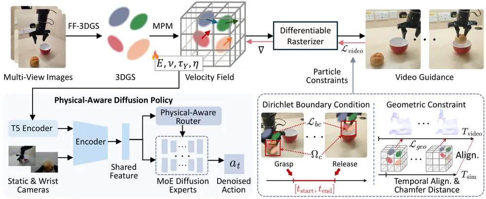
무슨 문제인가
Diffusion Policy와 DP3 같은 imitation policy는 물체를 겉모습과 형상으로만 보고 재질은 모름. 겉모습이 비슷해도 물렁한 빵과 단단한 블록은 잡는 방식이 달라야 함. 재질이 다른 물체의 시연을 한 policy로 배우면 서로 맞지 않는 행동이 평균되어 어느 쪽에도 맞지 않는 행동이 나올 수 있음. 기존 system identification은 설계된 상호작용이나 힘 측정이 필요해 일상 물체 여러 개로 늘리기 어려움.
어떻게 푸나
먼저 물체 주변을 반구 모양으로 찍은 영상에서 64 frame을 뽑아 feed-forward 3DGS로 Gaussian을 복원함. Gaussian 하나마다 MPM(Material Point Method: 입자와 배경 격자로 변형체를 계산하는 시뮬레이션) 입자를 하나씩 붙여, 시뮬레이션된 움직임이 그대로 렌더링되게 함. 추정 대상은 Young's modulus(E), Poisson's ratio(ν), yield stress(τY), viscosity(η) 4개임. VLM(Qwen3-VL)이 초기값을 주고, 재질 종류별 상하한으로 값을 매 단계 잘라 냄. 고정 시점 조작 영상과의 렌더링 차이, 물체 형상의 Chamfer distance, 그리퍼가 쥔 구간의 입자 위치 제약을 합친 loss로 parameter를 gradient descent로 맞춤. 추정된 parameter는 언어 지시, 고정 카메라·손목 카메라 영상과 함께 policy에 들어감. policy는 탄성·foam·소성·강체 4개 expert가 각각 noise를 예측하고, router가 낸 가중치로 합쳐 행동을 만듦. 네 expert는 먼저 각 재질 라벨의 시연으로 따로 학습하고, 그다음 router와 함께 전체를 fine-tuning함. 배포 때는 시뮬레이션을 돌리지 않고, DINOv2 feature로 미리 추정해 둔 parameter 저장소(physics memory bank)에서 가장 비슷한 물체의 값을 가져옴.
결과
- 실로봇 pick-and-place(재질마다 물체 여러 개, 물체당 30회)에서 탄성 물체 평균 성공률이 DP3 30.0%, DP 25.2%에 비해 57.1%임. 강체는 DP3의 49.2%에서 70.0%로 오름. 시뮬레이션(Isaac Lab, 과제당 120회)에서는 소성·강체가 이미 95% 이상이라 차이가 작음.
- 실로봇 ablation에서 네 재질 평균 성공률은 DP 28.9%, DP에 물리 parameter 조건만 넣은 단일 policy 49.4%, 전체 모델 62.5%임. 단일 policy 대비 차이에는 expert 사전학습과 router가 함께 들어 있어 router만의 효과는 따로 보이지 않음.
- 시뮬레이션 물체의 parameter 추정 오차(4개 parameter 평균, E·τY·η는 log-MAE)는 0.565이고, VLM 초기화를 빼면 1.257로 커짐.
- 실로봇에서 물체당 online 최적화는 798.22초, memory bank 검색은 약 415ms 걸림. 두 과제 평균 성공률은 online 최적화 60.7%, memory bank 검색(bank 크기 15) 59.2%로 비슷함.
한계
parameter 추정 정확도는 정답이 있는 시뮬레이션 물체로만 쟀고, 실제 물체의 추정값이 맞는지는 확인하지 않음. memory bank 검색은 같은 물체가 저장된 within-domain 조건에서만 평가되어, 처음 보는 물체에 맞는 물리값을 가져오는지는 보이지 않음. expert 사전학습에 재질 라벨이 필요하고, 과제는 pick-and-place와 stacking 두 가지이며 코드 공개 언급이 없음.
누리랩 연구와의 연결
- 3DGS를 MPM 입자와 묶어 시연 영상에서 물체 물성을 거꾸로 추정하는 파이프라인임. object-centric 3DGS 표현에 외형 외에 물리 속성을 붙이는 연구에서 비교 대상으로 쓸 수 있음.
- 시뮬레이션에서 parameter 하나씩 오차를 일부러 키우자 성공률이 내려간 sensitivity 실험은, 물성 추정 실패를 manipulation failure의 원인으로 진단하는 failure detection 연구의 출발점이 될 수 있음.
12
62점
Trusting Imagined Futures: Auditing Imagined Rewards for VLA Post-Training
VLA
relevance 9/10
Robotics (cs.RO)
video world model이 상상한 결과에 reward model이 준 높은 점수를, 실제 실행 결과로 학습한 auditor가 한 번 더 검사해서 VLA behavior cloning에 쓸 궤적을 고름. LIBERO 4개 suite 평균 성공률이 기존 궤적으로만 학습할 때의 73.25%에서 76.25%로 오름.
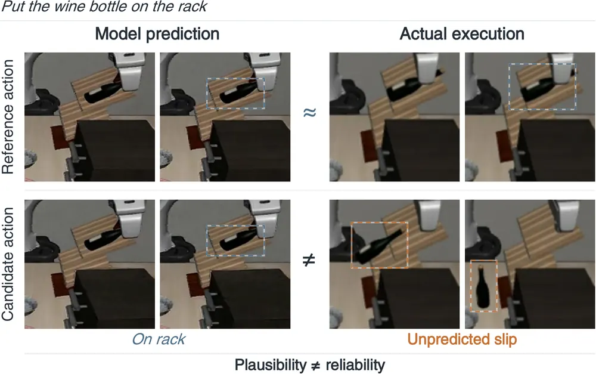
무슨 문제인가
VLA를 imitation learning으로 post-training하면 정책은 supervision 궤적의 좋고 나쁜 점을 그대로 따라 배움. 그래서 후보 행동을 world model로 상상해 보고 reward model 점수가 높은 궤적으로 기존 supervision을 바꾸는 방식이 쓰임. 그런데 상상 영상에서는 성공한 것처럼 보여도 실제로는 물체가 미끄러지거나 충돌하는 후보가 높은 점수를 받을 수 있음. 이런 후보를 behavior cloning 목표로 받아들이면 정책이 잘못된 행동을 배우게 됨.
어떻게 푸나
TIF(Trusting Imagined Futures)는 고정된 후보 풀에서 supervision 궤적을 고르는 offline 방법임. 초기 상태마다 기존 궤적(Source), OpenVLA greedy 후보 1개, sampling 후보 3개를 실제로 실행하고, Cosmos-Predict2 2B로 같은 행동의 상상 영상을 만듦. reward model은 상상 영상, 지시문, 행동을 입력받아 utility 점수 하나와 5개 실행 품질 차원(진행도, 목표 정합성, 조작 품질, 안전, 안정성)의 등급을 예측함. auditor는 이 예측값, 예측 불확실성, 영상 진단값을 입력받아 과대평가 위험(risk)을 출력함. auditor의 정답은 예측 utility가 높은데 실제 실행 utility가 낮고 둘의 차이가 큰 경우로 정함. 선택 단계에서는 utility가 가장 높은 후보가 Source보다 0.15 넘게 높고 risk가 0.50 이하일 때만 교체하고, 아니면 Source를 유지함. 고른 실제 실행 궤적의 관측과 행동으로 OpenVLA의 LoRA를 behavior cloning으로 학습함.
결과
- LIBERO(시뮬레이션 조작 benchmark, Spatial/Object/Goal/Long 4개 suite 40개 과제) 평균 성공률이 TIF 76.25%, Source만 쓴 behavior cloning 73.25%임. 궤적 수 800개와 학습 budget은 같고, 학습 seed 3개 평균임. Goal suite에서는 TIF가 Source보다 1.00퍼센트포인트 낮음.
- reward model과 교체 기준(Source 대비 예측 utility 차이 0.15 초과)을 고정하고 audit gate만 더하면 평균 성공률이 74.78%에서 76.25%로 1.47퍼센트포인트 오름. seed 3개 모두에서 오름.
- 교체 개수를 230개로 맞춘 정책 학습 비교에서 TIF는 76.25%, 예측 advantage 순위는 75.55%, logistic regression risk는 75.65%임. offline 비교에서는 같은 후보 310개 중 111개를 고를 때 Source보다 나은 교체가 auditor 58개, 예측 advantage 47개임.
- 실제 JAKA S5 로봇 과제 3개의 후보 풀 60개에서, 녹화된 실행 영상을 채점해 하나씩 고름. 충돌이나 잘못된 물체 조작 없이 끝난 궤적 비율이 Reward-only 58.33%(35/60)에서 TIF 70.00%(42/60)로 오름.
한계
정책 학습 실험은 OpenVLA와 LIBERO에만 있고, 개선 폭은 평균 3퍼센트포인트 정도임. 실로봇 실험은 상상 영상이 아니라 녹화된 실제 실행 영상을 채점한 것이고, 고른 궤적으로 정책을 다시 학습하지는 않음. reward model과 auditor 학습에는 정책 학습용 후보 풀과 별도로, 초기 상태 8,000개에서 만든 실제 실행·상상 영상 32,000쌍이 필요함. video world model의 상상 rollout으로 policy를 최적화하는 WMPO나, 상상 결과의 신뢰도로 후보를 거르는 WISE와 직접 비교하지 않음. 코드 공개 여부는 본문에서 확인 불가임.
누리랩 연구와의 연결
- world model과 reward model이 실패를 성공으로 잘못 평가하는 경우를 실제 실행과 짝지어 따로 학습한 사례임. world model 기반 failure detection에서 평가 신뢰도를 다루는 비교 대상으로 쓸 수 있음.
- test-time에 VLA 후보 행동을 reward로 고르는 방식(offline RL value로 행동 순위를 다시 매기는 V-GPS, process reward로 후보를 고르는 RoVer 계열)에 risk gate를 붙이는 설계로 옮겨 볼 수 있음.
13
62점
DiMuRe: Diagnosis-Guided Multilevel Recovery for Robotic Task Execution
Failure Recovery
relevance 8/10
IEEE 학술지 계열 양식 (추정)
Robotics (cs.RO)
작업 도중 물체가 밀리거나 grasp가 풀렸을 때, 진단 결과에 맞춰 기존 프로그램 재사용과 미리 만든 복구 skill 중 쓸 수 있는 것을 골라 실행하고 결과를 확인함. 시뮬레이션 교란 사례 801개에서 과제 성공률이 원래 프로그램의 58.68%에서 77.65%로 오름.
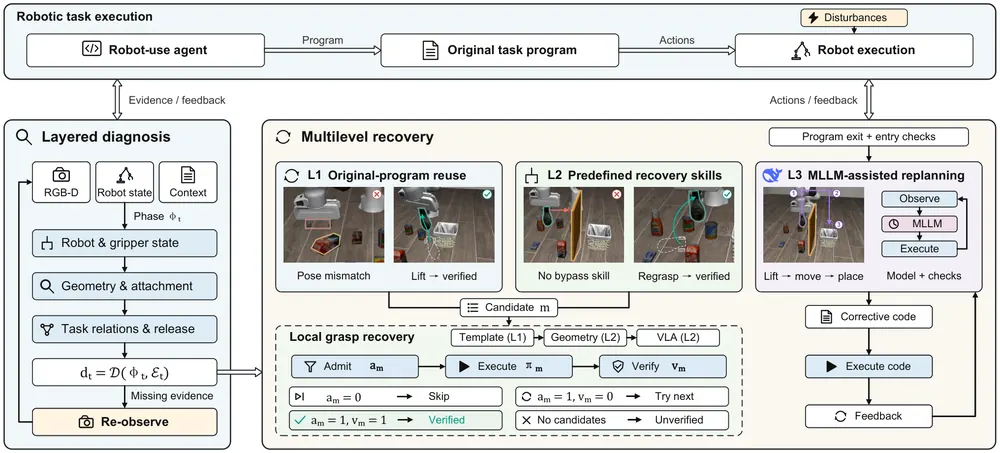
무슨 문제인가
code로 작업을 수행하는 robot-use agent는 실행 중 물체 위치나 grasp 상태가 바뀌면 다음 명령의 전제가 성립하지 않아 실패함. 이때 프로그램 대부분은 여전히 쓸 만하므로 전부 다시 짜는 것은 낭비이고, 그대로 계속 실행하면 실패함. 복구 방법마다 쓸 수 있는 조건이 다르므로, 지금 상태에서 어느 방법이 적용 가능한지 판단하고 복구가 실제로 됐는지 확인하는 절차가 필요함. 또 교란을 걸었다고 해서 그 교란이 실제로 적용되고 효과를 냈는지는 따로 기록되지 않아 평가도 어려움.
어떻게 푸나
DiMuRe(diagnosis-guided multilevel recovery)는 원래 작업 프로그램을 고치지 않고 실행 monitor를 붙여 motion·gripper 호출을 가로챔. 진단기는 rule 기반이며 현재 phase(grasp, transport, place, verify)에 따라 gripper 열린 폭, 물체와 end-effector의 변위 차이, 과제 관계를 RGB-D 기하로 확인함. 증거가 부족하면 결함으로 판정하지 않고 로봇을 위로 물러나게 한 뒤 다시 관측함. grasp 복구는 정해진 순서로 후보를 시도함: L1은 기록해 둔 grasp 구간의 waypoint를 물체 이동량만큼 평행이동해 재생하고, L2는 측정 형상 기반 regrasp와, 기존 grasp 전용 VLA인 GraspVLA를 쓴 grasp skill임. 후보마다 전제 조건을 먼저 확인해 맞지 않으면 건너뜀. 실행 후 grasp가 확인되면 탐색을 끝내고, 아니면 다음 후보로 넘어감. L3는 원래 프로그램이 끝난 뒤에만 들어가며, MLLM(DeepSeek V4.1 Flash)이 RGB 이미지·상태·프로그램 맥락·실행 기록을 받아 교정 code를 생성함. 모든 단계는 같은 물리 step 예산을 나눠 씀.
결과
- LIBERO-Disturb(LIBERO 과제 실행 도중 9종 교란을 거는 저자들의 새 benchmark)에서 평가함. Encore(평가 전에 과제 프로그램을 code로 미리 만들어 두는 기존 방법)의 프로그램 30개와 교란 사례 801개를 씀. 같은 물리 step 한도(1,000)에서 과제 성공률이 원래 프로그램 58.68%에서 Local DiMuRe(L1+L2) 77.65%로 오름.
- 단계별 ablation에서 L1만 쓰면 73.66%, L2만 쓰면 65.54%임. grasp slip 90건 성공은 L1만 72건 대 L2만 49건이고, 물체 자세 변화 81건 성공은 L1만 26건 대 L2만 47건임.
- 원래 프로그램이 성공한 470건 중 Local은 463건을 유지함. 교란 없는 90건은 원래 프로그램, Local, Full(L1~L3 모두 사용) 세 설정 모두 100% 성공함.
- 사례당 평균 물리 step은 Local 310.20, 원래 프로그램 328.90으로 Local이 적음. 평균 작업 시간은 5.47초 대 4.65초로 Local이 김. Full은 81.90%이나 step 400을 더 받음. 또 결함이 계속되면 프로그램이 끝나기 전에 L3로 넘기는 조기 handoff도 허용돼 L3만의 효과로 볼 수 없음.
한계
결과는 모두 시뮬레이션이며 801개 사례는 개발 중에 고른 부분집합이고 사전 등록된 held-out 평가가 아님. 801건에서 뺀 교란 유형(물체를 놓을 영역을 6cm 옮기는 교란) 90건에서는 Local이 67건 성공으로 원래 프로그램 79건보다 낮음. 801건 중 교란의 물리적 효과가 확인된 것은 105건뿐이고, DoReMi 같은 기존 복구 방법과 직접 비교하지 않았으며 코드 공개 주소는 본문에 없음.
누리랩 연구와의 연결
- failure detection·recovery 연구에서, 진단 증거가 부족할 때 재관측하고 복구 후보를 전제 조건과 사후 검증으로 거르는 절차를 비교 기준으로 쓸 수 있음.
- LIBERO-Disturb는 교란 적용, 물리적 효과, 과제 성공을 따로 기록하고 π0.5 같은 VLA policy에도 붙일 수 있어 VLA의 실행 중 교란 강건성 평가에 쓸 수 있음.
14
60점
Cycle WAM: Coupling Action and Video through Cycle Consistency
World Model
relevance 9/10
ICRA·IROS·RA-L 계열 양식 (추정)
Computer Vision and Pattern Recognition (cs.CV)
영상과 행동을 함께 생성하는 world action model에, 영상과 행동 사이 양방향 변환 학습과 행동으로 영상을 다시 복원하는 cycle 학습 목표를 더함. LIBERO-Pro 교란 조건 4개 평균 성공률이 DreamZero의 13.5%에서 17.8%로 오르지만, 오른 폭 대부분은 cycle이 아니라 양방향 변환 학습에서 나옴.
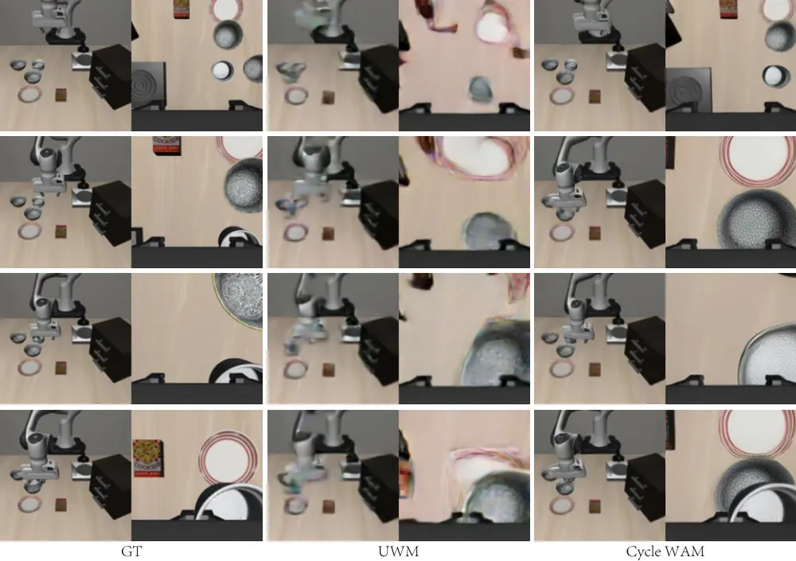
무슨 문제인가
world action model(WAM)은 사전학습된 video model 위에서 미래 영상과 로봇 행동을 함께 생성하는 모델임. DreamZero, UWM 같은 기존 WAM은 두 출력을 한 backbone에서 만들지만, 예측한 행동이 예측한 영상 변화를 실제로 만들어 내는지는 학습 목표에 들어 있지 않음. 그럴듯한 미래 영상을 만들어도 그 영상에 맞는 실행 가능한 행동이 함께 나온다는 보장이 없음. 저자들은 이 불일치 때문에 사전학습된 영상 지식이 행동 예측에 충분히 쓰이지 못한다고 봄.
어떻게 푸나
Cycle WAM은 DreamZero 구조의 5B WAM(Wan2.2-TI2V-5B에서 초기화)을 세 단계로 학습함. 첫 단계는 관측, 로봇 상태, 지시문을 받아 미래 영상과 7차원 행동을 함께 생성하는 co-training임. 둘째 단계 Bidirectional Conversion은 같은 모델에 영상을 주고 행동을 맞히게 하거나(inverse dynamics), 행동을 주고 영상을 맞히게 함(forward dynamics). 셋째 단계 Cycle은 원본 영상에서 한 번의 flow readout으로 행동을 추정하고, 그 행동으로 원본 영상을 다시 복원하게 함. 추정한 행동을 계산 그래프에 남겨 두므로 복원 손실의 gradient가 forward 경로를 거쳐 inverse 경로까지 흐름. 기록된 행동으로 inverse를 따로 지도하는 항도 함께 두어 행동이 실제 로봇 명령에서 벗어나지 않게 함. 배포 시에는 cycle을 돌리지 않고 joint generation으로 영상과 행동을 바로 생성함.
결과
- LIBERO-Pro(LIBERO 과제에 지시문 바꾸기와 물체 위치 바꾸기 교란을 건 평가)에서 고른 조건 4개, 조건당 100 episode의 평균 성공률이 17.8%임. 같은 조건에서 직접 평가한 DreamZero는 13.5%, π0.5는 15.3%임. 조건 이름의 T는 지시문 바꾸기, S는 물체 위치 바꾸기 교란임. 다만 Spatial-T에서는 DreamZero(27%)보다, Goal-S에서는 π0.5(38%)보다 낮음.
- 같은 표의 ablation에서 Cycle을 뺀 모델의 평균은 17.0%로, 오른 폭의 대부분은 Bidirectional Conversion에서 나옴. 같은 checkpoint에서 데이터와 계산량을 맞춰 이어 학습한 비교에서는 Cycle의 추가 이득이 일관되게 나타나지 않음.
- DROID(대규모 실로봇 조작 데이터셋) 기반 DreamZero-DROID 시뮬레이터 장면 3개(장면당 20 episode)에서 성공 횟수가 59/60임. Cycle을 뺀 변형은 58/60, 공개 DreamZero 가중치는 52/60임.
- 실로봇에서는 평가한 장면 5개 중 3개에서 과제를 완료했고 DreamZero는 0개임. 장면 단위 집계이며 반복 시행 성공률은 아님.
한계
제목의 Cycle 목표가 따로 기여한다는 증거가 약함. 저자도 학습 예산과 update 방식이 달라 각 목표의 기여를 분리하지 못했고, 전체 LIBERO-Pro 집계는 거의 변하지 않으며 교란 없는 Standard 조건 성능은 Bidirectional Conversion 뒤 내려간다고 적음. 실로봇은 장면 5개의 완료 여부만 있고, 원문에 코드 공개 주소가 없음.
누리랩 연구와의 연결
- world model과 VLA를 한 모델에서 forward/inverse dynamics로 함께 학습하는 설정이라, 행동과 예측 영상의 일치도를 failure detection 신호로 쓰는 연구의 출발점이 될 수 있음.
- 같은 checkpoint에서 데이터와 계산량을 맞춰 이어 학습했을 때 cycle 손실의 추가 이득이 없었다는 결과는, world model 기반 policy에 cycle consistency를 넣으려 할 때 미리 확인할 부정적 근거가 됨.
15
50점
Physical Experience Builds Continual Spatial World Models
World Model
relevance 8/10
NeurIPS 2026 채택
Robotics (cs.RO)
공이 굴러가는 원형 미로에서 문의 열림 여부가 바뀌는 변화 사이의 관계를 여러 에피소드에 걸쳐 배우는 memory(SCM)를 만듦. 학습에서 한 번도 안 본 위치의 문 상태를 0.898의 정확도로 맞혔고, 위치별 memory는 약 0.566에 머묾.
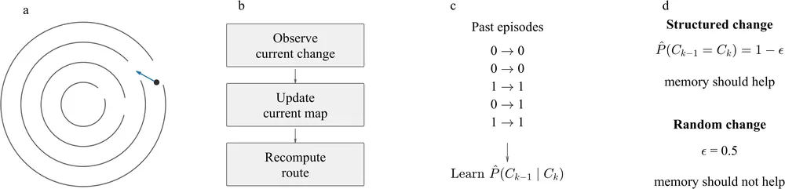
무슨 문제인가
변하는 환경을 다시 방문하는 로봇은 바뀐 곳을 보고 나서 경로를 다시 짜는 reactive 방식으로도 매번 과제에 성공할 수 있음. 하지만 이 방식은 열 번째 방문에도 첫 방문과 같은 관측과 수정이 필요해서, 경험이 쌓여도 다음 방문이 쉬워지지 않음. D* Lite(예전 탐색 정보를 남겨 경로를 다시 짤 때 쓰는 planner)나 Experience Graphs(예전에 성공한 동작으로 다음 planning을 유도하는 방법)가 있음. 이들은 예전 탐색 결과나 성공한 동작을 재사용할 뿐, 환경이 어떻게 바뀌는지를 배우지는 않음. 또 경로가 위상적으로 맞아도 관성, 마찰, 접촉, actuator 지연 때문에 행동 결과 예측은 틀릴 수 있음.
어떻게 푸나
실험 환경은 기울어지는 원형 미로임. 동심원 고리 사이 벽에 문이 있고, 문의 열림 여부는 에피소드마다 바뀜. 인접한 고리의 경로 관련 상태가 확률 1−ε로 같도록 변화 구조를 통제함. SCM(Spatial Change Memory)은 위쪽 고리의 관측 상태를 입력으로 아래쪽 고리 상태를 예측하는 조건부 확률을 Beta prior와 개수 세기로 추정함. 이 추정기를 모든 위치가 공유하므로 한 위치에서 모은 증거를 다른 위치에 바로 씀. 주행 중에는 SCM이 아래쪽 문이 보이기 전에 그 상태를 추론해 경로를 바꾸고, 증거가 부족하면 reactive 판단으로 돌아감. 별도로 공의 운동은 rolling 관성, 선형·2차 drag, 탄성 벽 접촉, 1차 actuator 지연을 넣은 물리 모델로 예측함. 상태·행동·다음 상태 기록이 쌓이면 이 모델의 parameter 5개를 갱신함.
결과
- ε=0.10에서 학습 에피소드를 0개에서 64개로 늘리면 shared SCM의 예측 정확도가 0.564에서 0.898로 오름. 이론상 최대치(Bayes 한계)는 0.900임. 에피소드당 경로 수정 횟수는 1.744에서 0.406으로 내림.
- 학습에서 완전히 뺀 위치 하나를 평가하면 shared SCM은 0.898, reactive·episodic·위치별 memory는 약 0.566임. 과거와 미래 변화가 독립인 ε=0.5 조건에서는 history를 늘려도 정확도가 약 0.50에 머묾.
- 연속 주행 시뮬레이션의 결정이 바뀌는 에피소드 15개에서, 이미 무효가 된 목표를 쫓는 시간이 reactive 방식 7.806초에서 SCM 0.0083초(한 simulation step)로 내림. 평균 완주 시간은 42.25초에서 34.69초로 줄었고, 결정이 그대로인 에피소드 15개에서는 완주 시간 차이가 0임.
- 물리 parameter 추정은 일부러 틀린 초기값에서 시작함. 2,000개 transition을 쌓은 뒤 가장 큰 parameter 오차가 4.69%로 내림.
한계
모든 실험이 시뮬레이션이고, 문 상태는 인식 오류 없이 관측되며 변화는 이진이고 일부러 구조화됨. 물리 모델 학습은 정답 방정식 형태를 알고 parameter만 맞추는 설정임. D* Lite 등 기존 방법과 직접 비교하지 않았고, 코드나 프로젝트 주소는 본문에 없음.
누리랩 연구와의 연결
- 직접 연결 약함. 다만 robot memory나 continual world model 연구에서 변화 구조가 없는 ε=0.5 대조군과 학습에서 뺀 위치 평가를 넣는 실험 설계는 참고할 만함.
오늘의 흐름
- world action model이 예측하는 대상 바꾸기: 미래 영상 전체를 만들지 않고 action에 필요한 정보만 예측하는 world action model(WAM)이 여럿 나옴. FloMo는 미래 영상 대신 3D scene flow를 예측하고, DreamFree는 video diffusion model의 미래 feature를 현재 관측 encoder에 distillation해 영상 생성 없이 action을 냄. Cycle WAM은 영상에서 행동을, 행동에서 영상을 서로 복원하게 학습함.
- world model을 simulator와 평가기로 쓰기: PrimeSim은 22개 플랫폼 데이터로 다시점 action-conditioned simulator를 만듦. Compression Forcing은 과거 프레임 압축 방식을 바꿔, world model이 예측한 policy 성공률을 비교 tokenizer보다 실제 값에 가깝게 맞춤. TIF(Trusting Imagined Futures)는 상상 결과에 매긴 reward를 실제 실행으로 학습한 auditor가 다시 검사함.
- VLA post-training의 학습 방식 따지기: RAFT는 reasoning adapter를 먼저 학습하고 고정해, 실로봇 분포 밖 조건 성공률을 plain fine-tuning보다 높임. Should the Action Expert Train the VLM?은 action expert의 gradient를 VLM까지 흘릴지를 통제 비교함. CANDO는 고정된 flow matching policy를 noise와 행동 두 공간에서 online RL로 고침.
- 로봇 없이 모은 사람 데이터로 VLA 학습하기: AIRoA-0는 손에 드는 gripper로 녹화한 16,151시간 데모만으로 양팔 VLA를 학습함. H2RB(Human-To-Robot Bridge)는 사람 손 시연을 관측과 행동 양쪽에서 로봇에 맞춰 사전학습 VLA에 새 동작을 가르침.
- 실패를 찾고 복구하기: Say the Same, Act Differently는 reasoning VLA의 rationale을 그대로 둔 채 행동만 바꾸는 교란을 보여, 글만 보는 monitor로는 실패를 못 잡는 경우를 드러냄. DiMuRe는 실행 중 교란을 진단하고 복구 수단을 골라, 시뮬레이션 교란 사례 801개의 과제 성공률을 58.68%에서 77.65%로 올림.
해볼 만한 연구
예측한 scene flow와 실제 움직임의 차이로 실행 중 실패 감지하기
- 질문: world action model이 예측한 3D scene flow와 실행 뒤 관측한 실제 scene flow의 차이가, 영상 예측 오차보다 실패를 더 일찍 알려 주는지 밝힘.
- 첫 실험: LIBERO-Disturb(실행 중 교란을 넣는 시뮬레이션 조작 benchmark)에서 FloMo 방식의 flow 예측 오차와 영상 예측 모델의 픽셀 오차를 실패 예측 점수로 씀. 실패 발생 전 몇 step에서 AUROC가 얼마인지 비교함.
- 가장 가까운 연구: FloMo는 flow를 action 예측에만 쓰고 실패 판정에는 쓰지 않음. DiMuRe는 rule 기반 기하 검사로 교란을 진단하고, 학습된 예측 모델의 오차를 실패 신호로 쓰지 않음.
rationale과 행동이 어긋나는지 action 쪽에서 검사하는 monitor
- 질문: reasoning VLA에서 rationale이 같을 때 행동이 달라지는 경우를, hidden state를 TNAS(text loss gradient 성분을 뺀, 행동이 가장 민감한 방향)에 투영한 크기만으로 실행 전에 잡을 수 있는지 밝힘.
- 첫 실험: 조작용 reasoning VLA인 InstructVLA에 이미지 교란과 자연스러운 조명·가림 변화를 각각 넣음. 이후 TNAS 투영 크기와 rationale 기반 monitor의 실패 검출률을 비교함.
- 가장 가까운 연구: Say the Same, Act Differently는 공격을 만드는 데 TNAS를 쓰고 방어나 검출은 시험하지 않음.
상상 결과의 reward를 믿을지 test-time에 고르기
- 질문: world model이 상상한 후보 행동 중 하나를 실행 직전에 고를 때, 실제 실행으로 학습한 auditor gate(TIF식 과대평가 위험 판정기)가 성공률을 올리는지 밝힘.
- 첫 실험: PrimeSim 같은 공개 world model simulator로 VLA 후보 action chunk 여러 개를 rollout함. 이후 reward 최대값으로 고르는 방식과 TIF식 auditor gate를 붙인 방식의 실제 성공률을 비교함.
- 가장 가까운 연구: TIF는 학습 데이터를 고르는 offline 단계에만 auditor를 쓰고, 실행 시점의 행동 선택에는 쓰지 않음.
꼭 읽을 논문
- DreamFree: 미래 영상을 만들지 않고 world model feature를 distillation함. 실제 DROID 과제 10개 성공률이 DreamZero 56%에서 64%로 오르고, action chunk당 latency는 91ms로 17.8배 빠름.
- AIRoA-0: 로봇 없이 사람이 손에 든 gripper로 녹화한 데모 16,151시간만으로 양팔 VLA를 학습하고 데이터와 가중치 공개를 밝힘.
- FloMo: 같은 구조에서 예측 대상만 영상에서 3D scene flow로 바꿔 처음 보는 과제 성공률이 7%에서 60%로 오름.
- Say the Same, Act Differently: rationale 기반 failure monitor가 놓치는 경우를 hidden state 기하로 설명함.
- Should the Action Expert Train the VLM?: VLA 학습에서 gradient 차단과 action token 감독을 따로 끄고 켠 통제 비교라 우리 기본 설정을 점검할 근거가 됨.